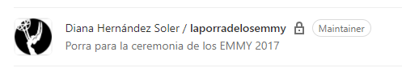

Que levante la mano el que tenga algún side project al que abandonó.
Pues de eso vengo a escribiros hoy. De como hace 3 años empece un porra de los Emmy con PHP y a día de hoy, y después de 2 intentos más, sigue sin estar terminada.
📆 CRONOLOGÍA
1️⃣ 2017 Cada año hacía la porra de los Emmy a papel. Pero terminando el Ciclo Superior de Desarrollo web como estaba me monté un pequeño proyectito con PHP para poder hacer mi porra y compartirla en twitter. No os lo vais a creer. Nunca lo terminé. 
2️⃣ 2018 Al año siguiente lo volví a intentar, pero está vez quería hacer un CRUD para añadir los nuevos nominados y esas cosas. Y me viene arriba con CodeIgniter y Grocery Crud. Al menos el CRUD estaba funcionando. Pero... Tampoco lo terminé.
3️⃣ 2019 Me digo a mi misma. ¡Esta vez si Pero ¿PHP? Me daba mucha pereza, así empezamos de cero con Node.js. Lo que pasó a continuación no os sorprenderá. No lo terminé.
4️⃣ 2020
Así que este año me he propuesto terminar este side project con Next.js. La porra de los Emmy 2017 2018 2019 2020.
👷♀ El proyecto
La idea es poder hacer nuestro porra simplemente clickando en la foto de nuestro ganador. Así iremos pasando por todas las categorias hasta llegar al final dónde se podrá compartir por redes sociales un resumen.
Vamos a devidir este proyecto en varios pasos
- Crearemos un proyecto en Next.js
- Crearemos una API con los nominados
- Intentaremos reutilzar los diseños de años anteriores
- Optimización de las imágenes con Webpack
📚 sources: